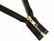

The Book, Zippers, and Curiosity Gap

The curiosity gap was so high when you were holding in the train this book filled with characters that they cannot read and you seemed so young according to these cognitive glasses they had. You were holding a physical book, a hard copy, what if it was this smartphone you have now or this ebook reader you can purchase?
The way this hardcopy was designed was also a curiosity gap level increase. How a book could have a zipper. Like this one

Our grandfathers and grandmothers taught us great lessons of humanity and care by making this book like that. Because that’s a book worth preserving they designed it with the zipper and they went until making it a simple holdable bag. Now today this simply gives me a simple work that matters to do and in which I could win a lot simply because I cared about this book as a believer and still care about IT. This Book helped me care more about every book that land on my hand and it happen that nowadays millions of them can land on our hand due to this device we got. If was holding this device for reading this book on the train perhaps my trajectory was going to be different. The fact that I was always with a copy of it also plays a role. I did not leave the country without it. I was holding Two copy this day and arrange myself to leave one in this room installed for prayers because in my mind I was telling my self if leave one here I could increase the propensity for another one to read it and to spread the message. Books are containers for messages. There is a so colossal and massive opportunity in designing this book zipper that we got from our grandparents who got it from the Only One with Who everything in his Hand.
This picture is really a very good starting point for the nice styled game with a main character and his dog in a game space colored like this